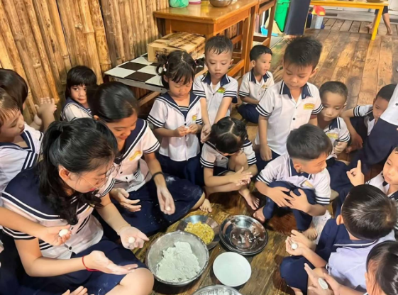
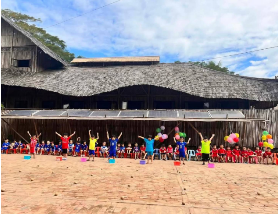
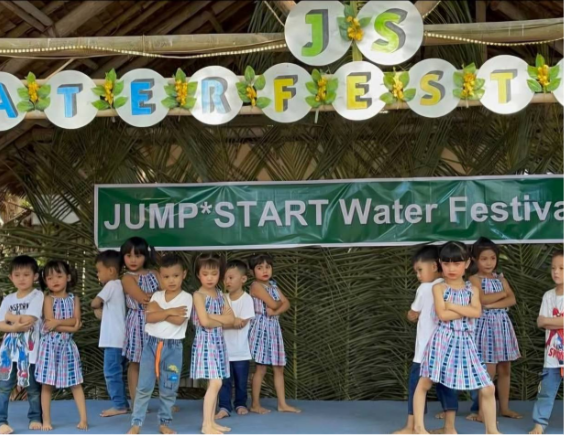
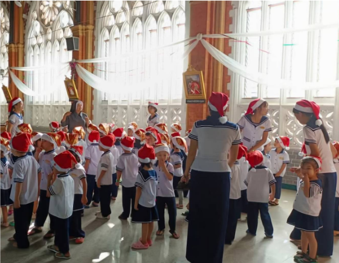
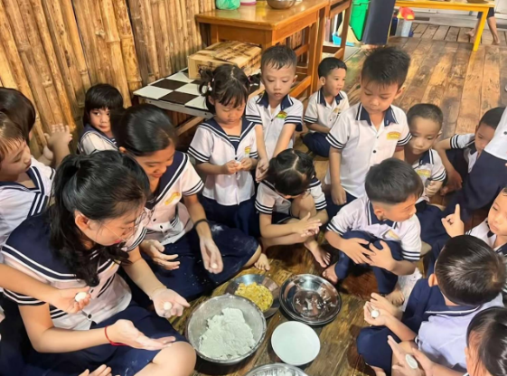
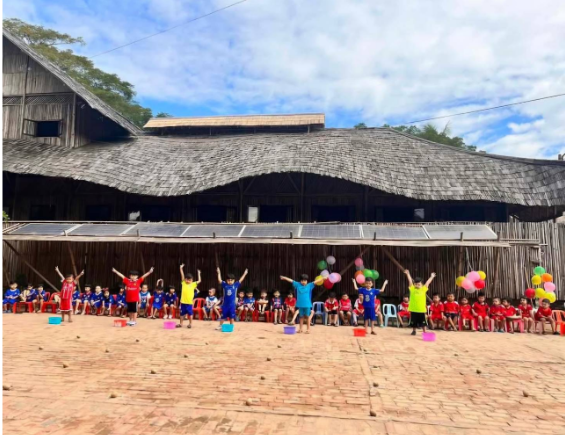
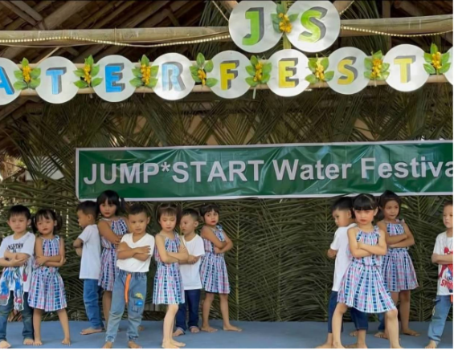
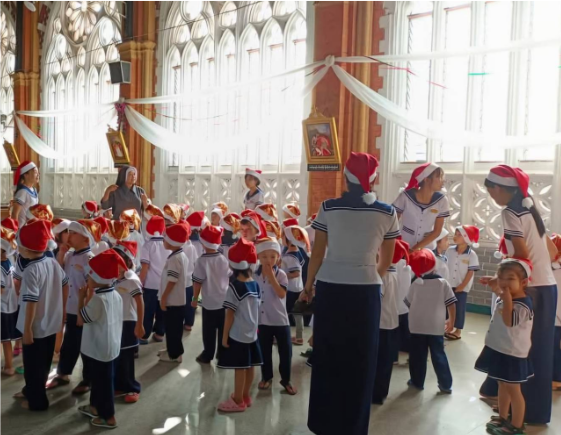

Professional Experiences
Freelance Tutor (2019–2023)
In 2019, I successfully passed my matriculation examination with four distinctions in English, Chemistry, Physics, and Biology. Following the completion of my matriculation studies, I began working as a freelance tutor, where I supported junior students in their preparation for the matriculation examination.
I assisted students in strengthening their academic foundations, developing effective study strategies, and approaching examinations with greater confidence. In parallel, I also worked as a freelance English teacher, independently organizing and conducting classes focused on writing, reading comprehension, and grammar.
These roles marked my first professional experience and first opportunity for financial and professional independence, strengthening my self-confidence, responsibility, and commitment to education.
English Teacher (2021–2023)
JUMP*START KIDs School
While working as a freelance teacher, I was offered a position as an English Teacher at one of the leading preschools in my hometown, an institution established for over two decades. This role provided valuable professional workplace experience and strengthened a wide range of soft skills.
I worked closely with a team of educators and regularly communicated with parents, discussing students’ progress and addressing learning needs. Bi-monthly meetings required analytical and critical thinking as teaching strategies were reviewed and refined collaboratively.
Beyond classroom responsibilities, I actively participated in planning and executing cultural, seasonal, and festival events, contributing from initial planning to detailed execution.
 







Teaching Assistant (2024–Present)
KMITL
Since my second year of study at KMITL, I have served as a Teaching Assistant for Physics I, Physics II (Electronics Laboratory), and Programming Laboratories involving Python and C#. My responsibilities include supervising laboratory sessions, guiding circuit setup, troubleshooting hardware and software issues, and supporting coding tasks.
I have also assisted with exam proctoring, assignment evaluation, and providing constructive feedback, reinforcing both my subject knowledge and academic rigor.
This role has significantly enhanced my analytical, problem-solving, leadership, and teamwork skills, while preparing me for future roles in engineering and education.
Website Coordinator (2024–Present)
SIIE, KMITL
I serve as a volunteer Website Coordinator for the SIIE team at KMITL, managing and maintaining event webpages. My responsibilities include updating event information, publishing announcements, and writing clear, accurate, and engaging content.
This role has strengthened my organizational, time-management, and written communication skills, while coordinating with team members has enhanced my teamwork and sense of responsibility.